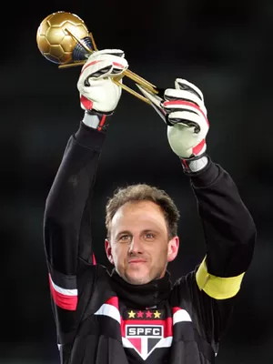

Rogério Ceni - O M1to Tricolor

Rogério Ceni, capitão do São Paulo Futebol Clube erguendo o troféu de Campeão do Mundial de Clubes em 2005.
Linha do Tempo de Rogério Ceni em 2005:
- Janeiro de 2005 – Inicia a temporada como capitão e goleiro do São Paulo.
- Março a julho de 2005 – Tem atuações decisivas na campanha da Copa Libertadores da América, marcando gols de falta e de pênalti e sendo um dos destaques da equipe.
- 14 de julho de 2005 – Conquista a Libertadores após a vitória do São Paulo sobre o Club Athletico Paranaense na final.
- Agosto a dezembro de 2005 – Marca diversos gols no Campeonato Brasileiro Série A, incluindo cobranças de falta e pênaltis.
- 14 de dezembro de 2005 – Marca um gol de pênalti na semifinal do Copa do Mundo de Clubes da FIFA contra o Al-Ittihad, tornando-se o único goleiro a marcar na história da competição.
- 18 de dezembro de 2005 – Conquista o Mundial de Clubes com a vitória por 1 a 0 sobre o Liverpool Football Club e é eleito o melhor jogador da competição.
- Fim de 2005 – Encerra a temporada com 21 gols marcados, a mais goleadora de sua carreira, além dos títulos do Campeonato Paulista, da Libertadores e do Mundial de Clubes.